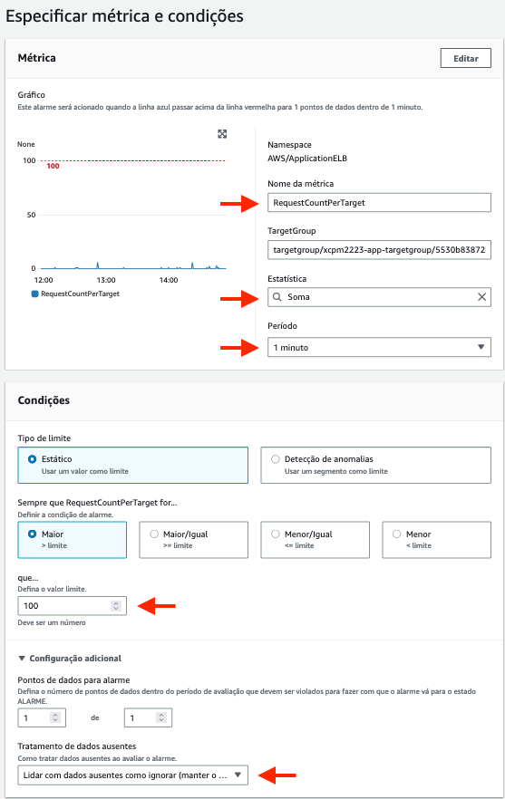
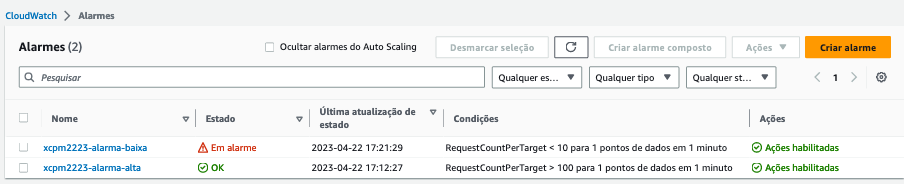
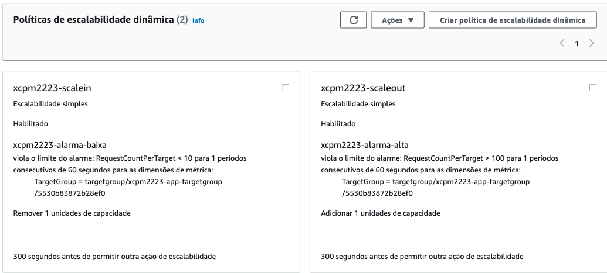
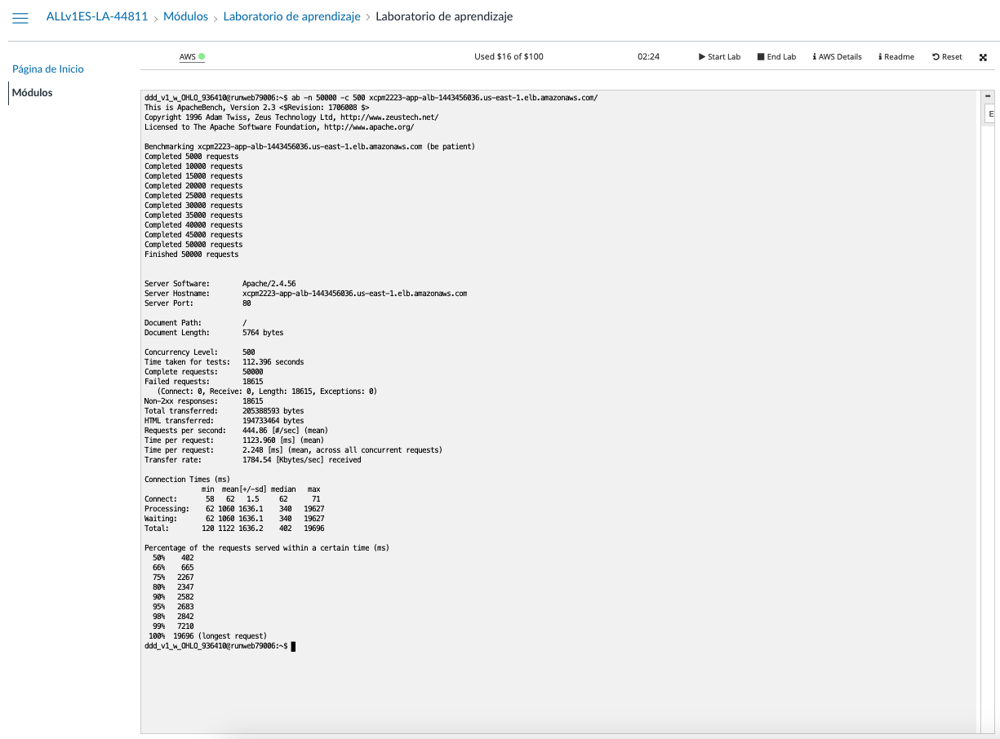
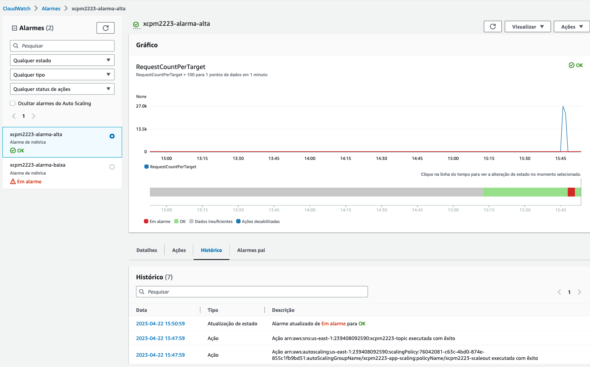
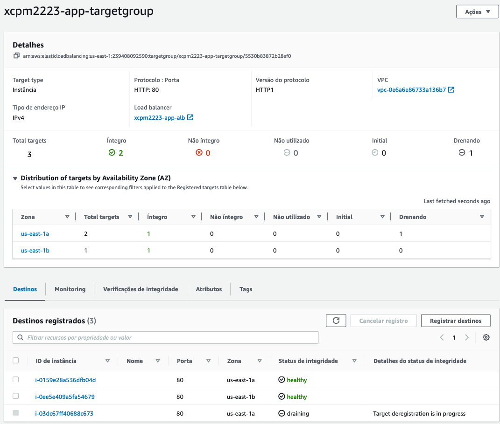
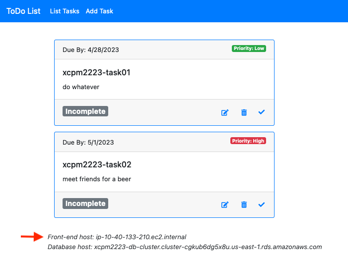
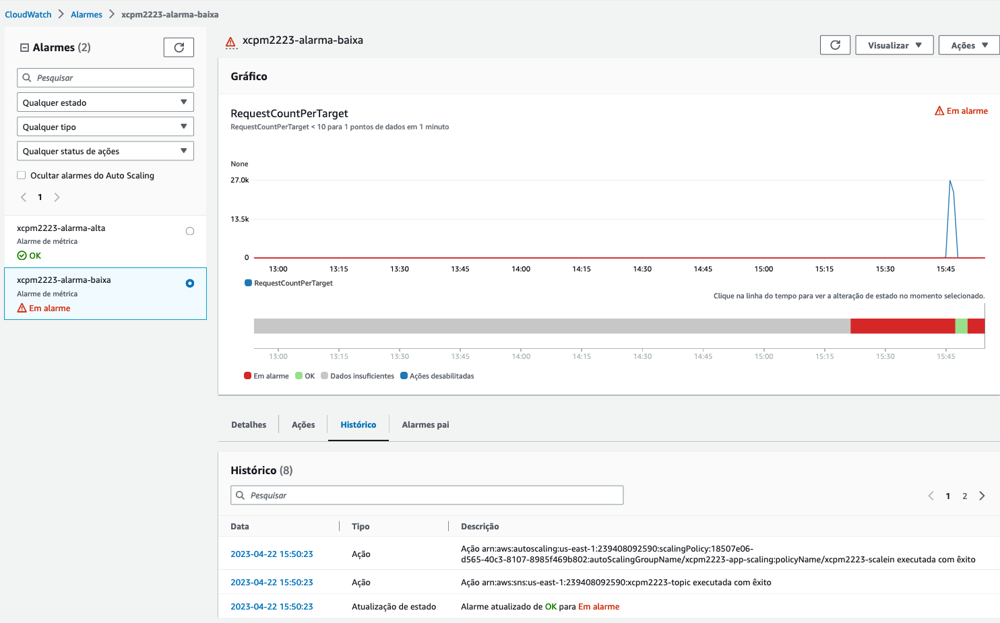
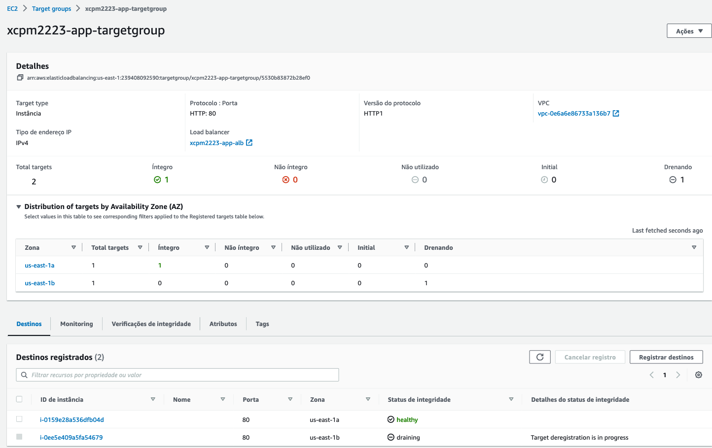
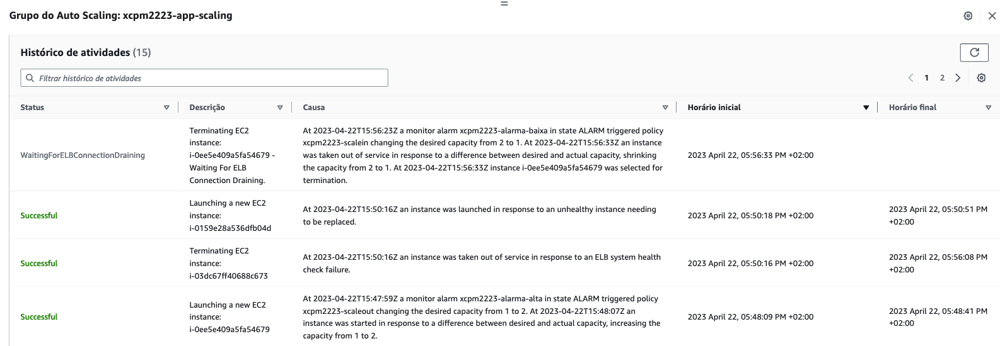

Paso 6: Configuración da elasticidade na capa de aplicación
Neste paso vamos configurar a elasticidade no grupo de autoescalamento da capa de aplicación e comprobar o seu funcionamento. En concreto vamos configurar:
- Alarmas para detectar cando o número de solicitudes recibidas polas instancias da aplicación desde o balanceador de carga é alto ou baixo.
- Políticas de escalamento para aumentar e diminuir o número de instancias na capa de aplicación en función das alarmas anteriores.
Crea unha alarma para o número alto de conexións
Para crear a alarma, fai o seguinte:
- No menú da consola de CloudWatch escolle a opción Todas as alarmas
-
Escolle a opción Crear alarma e no asistente indica as opcións seguintes:
- Métrica: escolle a métrica RequestCountPerTarget na categoría ApplicationELB->TargetGroup
- Estatística: Suma
- Periodo: 1 minuto
- Condición: >100. Na configuración adicional, escolle a opción Considerar datos ausentes como ignorar.
 Imaxe: configuración da métrica e condicións da alarma.
- Notificación: escolle o tópico SNS que creaches no titorial desta práctica.
- Nome: dalle un nome precedido do teu prefixo e curso, p.e. xcpm2223-alarma-alta
- Descrición: escribe unha descrición para a alarma.
-
Acepta para crear a alarma deixando as demais opcións aos seus valores por defecto.
Crea unha alarma para o número baixo de conexións
Para crear a alarma, fai o seguinte:
- Coa alarma creada no apartado anterior seleccionada, escolle no menú de accións da alarma a opción Copiar.
-
No asistente edita os datos seguintes:
- Condición: <10
- Nome: dalle un nome precedido do teu prefixo e curso, p.e. xcpm2223-alarma-baixa
- Descrición: escribe unha descrición para a alarma.
-
Acepta para crear a alarma deixando as demais opcións sen modificar.
 Imaxe: propiedades das alarmas.
Crea a política para engadir instancias
Para crear a política de escalamento que engadirá instancias cando o número de conexións recibidas desde o balanceador supere o límite, fai o seguinte:
- Vai para a consola de EC2 e escolle o grupo de autoescalamento da capa de aplicación.
-
Na lapela Escalabilidade automática das propiedades do grupo, escolle a opción Crear unha política de escalabilidade dinámica e indica as seguintes opcións:
- Tipo de política: Escalabilidade simple
- Nome: dalle un nome precedido do teu prefixo e curso, p.e. xcpm2223-scaleout
- Alarma de Cloudwatch: escolle a alarma para o número alto de conexións que creaches anteriormente.
- Acción: Engadir 1 unidade de capacidade
-
Acepta para crear a política deixando as demais opcións aos seus valores por defecto.
Crea a política para eliminar instancias
Repite os pasos do apartado anterior indicando agora as seguintes opcións:
- Tipo de política: Escalabilidade simple
- Nome: dalle un nome precedido do teu prefixo e curso, p.e. xcpm2223-scalein
- Alarma de Cloudwatch: escolle a alarma para o número baixo de conexións que creaches anteriormente.
- Acción: Eliminar 1 unidade de capacidade
 Imaxe: propiedades das políticas de escalabilidade.
Proba a elasticidade da capa de aplicación
Vamos agora executar unha proba de carga na aplicación para provocar que se activen as políticas do grupo de escalamento. Para elo, vamos aproveitar que o comando ab xa está dispoñíbel no terminal que nos proporciona o laboratorio de AWS Academy. Usando o DNS do teu balanceador de carga, fai as execucións que sexan necesarias para provocar a activación das políticas de escalabilidade que definimos anteriormente.
Nas seguintes capturas podes ver un exemplo do comportamento agardado:
 Imaxe: exemplo da execución dunha proba de carga no terminal do laboratorio.
 Imaxe: estado da alarma que detecta un número elevado de conexións e histórico que amosa que se aplicou a política de escalabilidade para aumentar o número de instancias.
 Imaxe: estado do grupo de destino do balanceador con dúas instancias en AZ diferentes despois de aplicar a política de escalabilidade.
Nota
Se recargas varias veces a páxina da aplicación coa listaxe de tarefas pendentes mentres haxa dúas instancias en execución, verás que cambia a información do DNS privado que sirve a páxina dependendo de a que instancia redirixa a solicitude o balanceador.
 Imaxe: DNS privado da instancia que serve a páxina da aplicación.
Unha vez a proba de carga remate, e pase un certo tempo sen realizar máis conexións, actívase de novo o grupo de escalamento para reducir o número de instancias, como amosan as seguintes capturas:
 Imaxe: estado da alarma que detecta un número reducido de conexións e histórico que amosa que se aplicou a política de escalabilidade para reducir o número de instancias.
 Imaxe: estado do grupo de destino do balanceador coa instancia que se está a eliminar como consecuencia de aplicar a política de escalabilidade.
 Imaxe: historico do grupo de escalamento no que se amosa a aplicación das políticas de escalabilidade. Tamén aparece a substitución dunha instancia debido a un fallo na comprobación de estado realizada desde o balanceador.